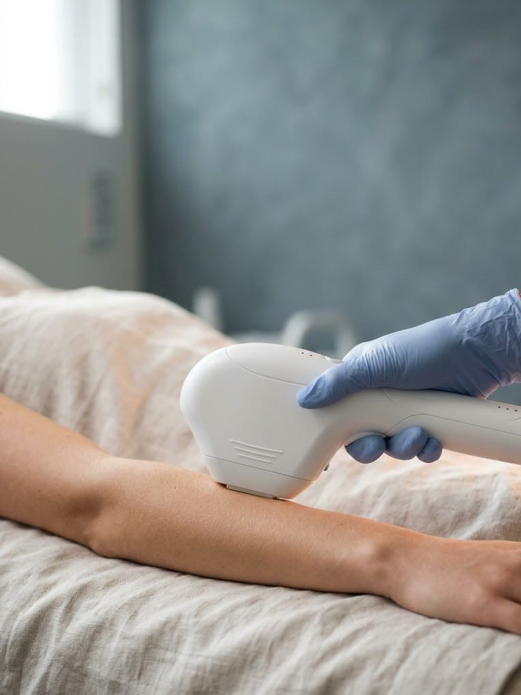
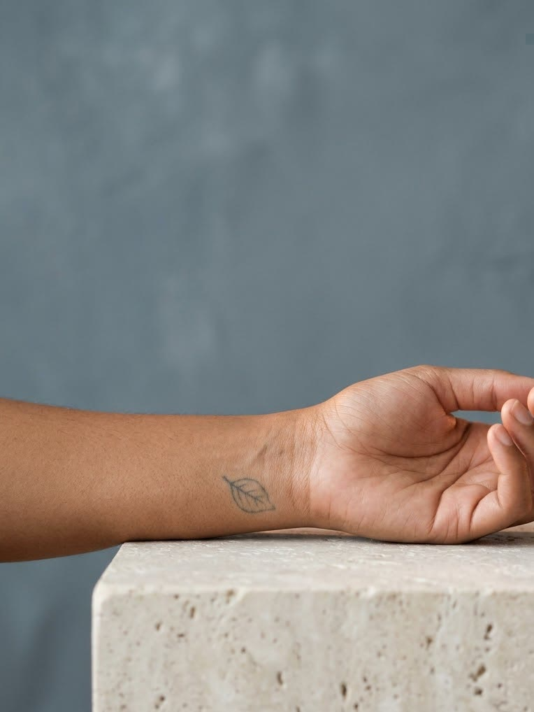

I consulted Dermacure for my small hair patches and I had a wonderful experience. The doctor was very kind, professional and attentive throughout the treatment. The medication and treatment were effective and the entire process was smooth and comfortable. What I appreciated most was their dedication and follow-up care. They genuinely make sure you are recovering well and don’t leave you without proper guidance until you see improvement. I’m really happy with their service and would highly recommend Dermacure to anyone facing similar hair concerns! ❤️
PimplesAcne scarsDark patchesTanHair fallUnwanted hairMolesTattoosStretch marksFine lines
What is bothering you?
Pick one. Each page tells you what it is, what helps, and how long it really takes.
Pimples and acne scars
Active pimples, the marks they leave, and the dips that stay.

Dark patches and tan
Tan, melasma and uneven tone, treated with patience and sunscreen.
Hair fall
Thinning, shedding and patchy loss, starting with the cause.

Unwanted hair
Laser hair removal over a planned set of sittings.

Moles, tattoos and scars
Checked first, then removed or faded over planned sittings.

Lines and ageing
Botox, fillers and skin care that keep you looking like you.
MBBS, MD (DVL), FIADVLMD from Guntur Medical College. Member, IADVL.
Your doctor
Dr. Sahitya Reddy
Consultant Dermatologist
You sit down and say what is bothering you. She looks, tells you what it is in plain words, and lays out the options. Then you choose.
- Trained at
- MD in Dermatology, Venereology and Leprosy, Guntur Medical College
- Member of
- Indian Association of Dermatology, Venereology and Leprosy
- Areas of interest
- Acne and acne scars, chemical peels, laser for pigment and tattoos, non-surgical facelifts and Botox
4.9out of 5 on Google
520Google reviews, as of November 2026
13treatments under one roof
7days a week, Sunday mornings included

Your first visit
Three steps. No surprises.
- 01
Look
Dr. Sahitya examines your skin, hair or scalp and asks what you have already tried. Bring your creams and old prescriptions.
- 02
Explain
You hear what the problem is, what can help, how many sittings it may take, and what it will not do.
- 03
Decide
You choose what to start with: medicines, a procedure, or both. Follow-up visits check how you are doing.
Our services.
Every treatment starts with a diagnosis. Some problems need a cream, not a machine, and you will be told which.


See all 14 services Also mole removal, tattoo removal, laser toning, fillers and more.
Had my facial mole removal treatment at Derma Cure with Dr. Sahithi Reddy. The doctor was friendly, explained the procedure and aftercare instructions clearly, and made me feel comfortable throughout the process. The staff were also helpful and cooperative. Hoping for good healing and results. Thank you.
My friend pramod visited Dr. Sahithya for a hair consultation and had a very good experience. The doctor listened patiently, explained the causes of hair loss in detail, and suggested suitable treatment options without any pressure. The staff were polite, and the clinic was clean and well-organized. I and my friend would recommend Dr. Sahithya to anyone looking for a professional hair consultation.
The anti-aging treatment at dr.sahitya Dermacure, especially the derma fillers gave me very suitable and beautiful results.
Achally I was worried about looking but doctor ensured a very natural enhancement that refreshed my whole face.
The entire journey was too smooth height recommended
I’m currently undergoing hair treatment at Dr. Sahitya Hospital, and I’m really happy with the way Dr. Sahitya is treating me. She explains everything patiently and makes sure I feel comfortable throughout the treatment. I genuinely feel that I’m in good hands, and I’m already feeling more positive and hopeful about my hair journey. I’m looking forward to seeing more improvement with the continued treatment. Highly grateful for the care and guidance I’m receiving. ❤️
One of the best skin and hair clinics in the area! The hygiene standards are top-notch, and the consultations are thorough without any rushed upselling. I consulted them for hair thinning (GFC) and some skin concerns, and their pigmentation treatments and peels worked wonders. The LHR and CO2 laser equipment they use are also modern and effective. Truly professional service from start to finish.
I went to this Dr.Sahitya’s Dermacure for hair treatment, and I’m happy with the results. My hair has become thicker, and my hair fall has noticeably decreased. Dr. Sahitya explained everything clearly and spoke very kindly. I’m really satisfied with the treatment and would recommend this hospital to others looking for hair treatment.
Sahitya Dermacure in Rajahmundry for laser hair reduction.the doctor and staff are highly professional,and they use advanced,painless laser technology.iam extremely satisfied with my hair reduction results.totally excellent it..
The clinic.
1st floor, above Bank of Baroda


Timings
Mon to Sat
9:30 am to 8 pm
Sun
10 am to 12 noon
Address
1st floor, above Bank of Baroda
Manasa Hospital Rd, opposite Prakash Nagar petrol bunk
Danavaipeta, Rajamahendravaram, Andhra Pradesh 533103
From the doctor's desk
Skin and hair, explained.

Hydrafacial for Skin brightening this Summer Season
Hydrafacial is a popular and innovative skincare treatment that offers a multi-step approach to rejuvenating and enhancing the skin’s appearance. During a Hydrafacial session, the skin is cleansed, exfoliated, and infused with nourishing serums, all while impurities are gently extracted from the pores. This non-invasive procedure is highly customizable, allowing skincare professionals to tailor it…

What is MNRF and benefits of MNRF Treatment for Acne Scars
MNRF stands for Microneedling with Radiofrequency. It's a cosmetic procedure that combines two techniques: microneedling and radiofrequency energy.
PCOS Hair fall treatment in rajahmundry
Polycystic Ovary Syndrome (PCOS) is a hormonal disorder that can cause a variety of symptoms, including irregular periods, acne, weight gain, and hair loss. Hair loss associated with PCOS is often due to the elevated levels of androgens (male hormones) in the body. What is PCOS? Polycystic Ovary Syndrome (PCOS) is a common hormonal disorder…

Book a consultation
It starts with a conversation.
Tell us what is bothering you. Mon to Sat, 9:30 am to 8 pm. Sun, 10 am to 12 noon.